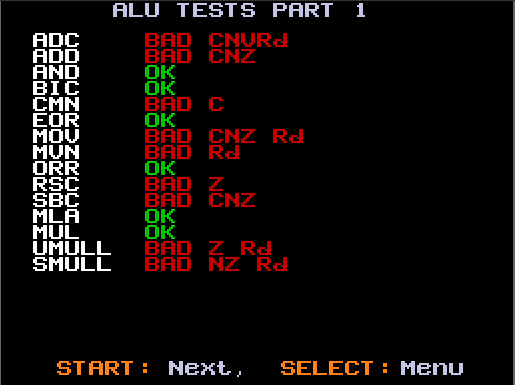
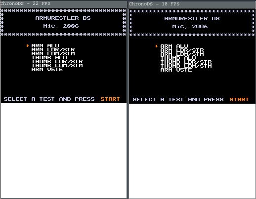
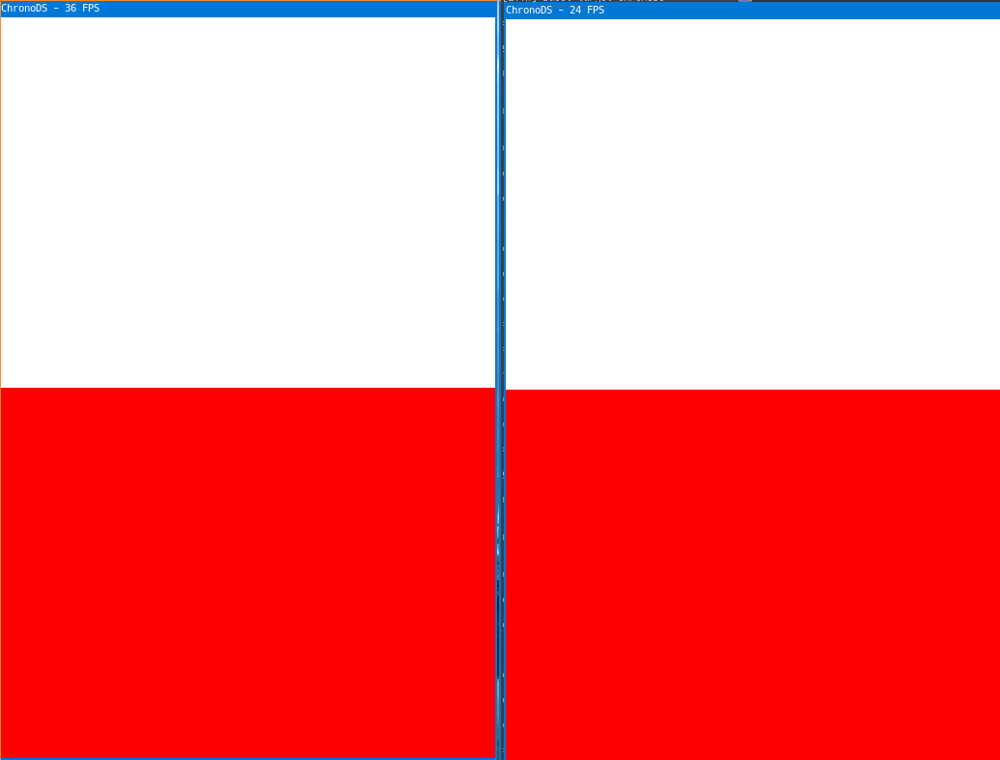
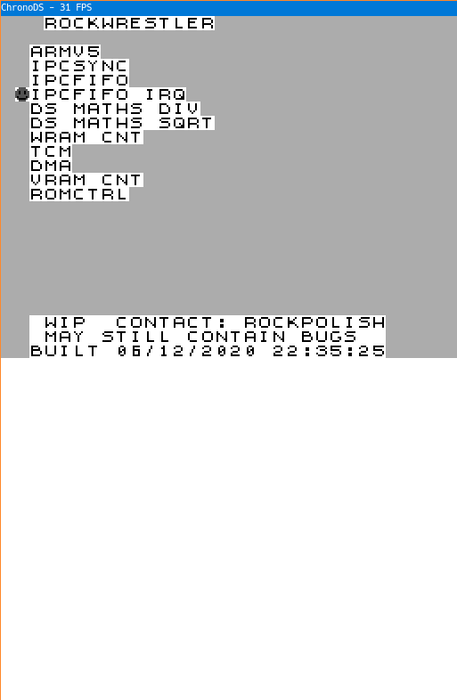
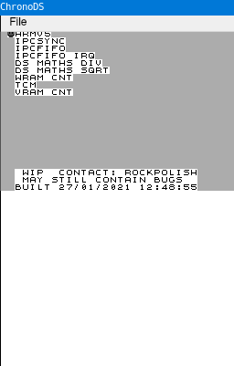

Welcome back for the 2nd progress report of my recently started DS emulator ChronoDS! This month had its downs for certain aspects of the emulator, but in the end alot of nice progress was made, so lets go over it. To start with right after I wrote the first December 2020 progress report I got to work on trying to boot armwrestler, a very simplistic nds rom which tests arm and thumb cpu instructions. After a couple of days of implementing instruction handlers and looking through armwrestler assembly code to fix bugs, I was finally greeted with the boot screen..., and the screenshot below shows how much of the cpu i had incorrectly implemented LOL

After thinking for a while, I decided to spend a couple days rewriting my entire interpreter. The main changes that came from this interpreter rewrite was that instructions were handled through a switch case statement instead of a lookup table (array of function pointers) and that also arm and thumb instructions were split into more functions so that it would be easier for me to detect which instruction functions was causing armwrestler to fail. It even gave a teeny fps boost from 18fps to 22fps in armwrestler!

The rewrite was definitely justified in the end, as in the next couple of days i was able to get armwrestler to pass all arm and thumb tests. However I've still got armv5 special instructions to implement so that final test will have to wait a bit... Once I had done most of what was in armwrestler i had the crazy idea to try and boot through the firmware. For some context up until now I was booting the DS through direct boot, which works by taking the values that are present in cpu registers and memory after the firmware has booted and using those such that a rom can be booted directly. However the firmware boot poses a much higher difficulty to get working, as it requires you to implement things such as the cartridge and firmware protocol, timers, ipc and DMA (i think). Anyways i spent a week and a bit trying to boot the firmware, and for now I have gotten up to IPCFIFO and have since decided to take a break from booting through the firmware to work on getting libnds homebrew to run through direct boot. However while attempting to boot the firmware I also rewrote my entire emulator code, mainly for the reason that I wouldn't have to worry about some bad bugs that would possibly waste more time for me. The emulator rewrite also suprisingly gave quite an fps boost which for myself I'm not even sure why :)

So my goal next was to boot some libnds homebrew, which to my knowledge libnds homebrew has a specific startup which does some certain things such as the initialisation of io registers, etc. I haven't ended up booting libnds homebrew as of January, but hopefully keep an eye out for next months progress report to see some homebrew running! (not guaranteed tho :`( ). Through the process of trying to boot libnds homebrew I was also able to get around to implementing some important components of the DS such as timers and DMA. At the same time a nds rom called rockwrestler booted as well which provides tests to test certain behaviour of components outside of the cpu which is a welcome step in the right direction.

And finally at the end of January I decided to implement another frontend which is for Qt! Qt provides a more user friendly interface for ChronoDS compared to my SDL frontend and will in the future provide some cool features so keep an eye out!

Next month I start uni though so unfortunately I'm going to be occupied less with ChronoDS but hopefully some progress can still be made! Until then cya!
Recently I've undertaken the journey of writing a DS emulator. I've decided to write a DS emulator as the DS was the console that I grew up with so it holds nostalgic value to me and it will also allow me to learn some more advanced concepts (JIT, 3d graphics, etc). To begin with I started by writing up some basic functions to load the ARM9 and ARM7 bios and firmware but realised soon enough that to boot the firmware was a massive undertaking in ones journey to write a DS emulator so instead I switched my focus to direct booting the DS. Using the direct boot values found at GBATEK (best documentation for the DS imo), I started by loading the cartridge to correctly put the r15 of the ARM9 and ARM7 at the correct addresses. After some research I figured out that the Cartridge header holds certain data on which data of the cartridge is initially transferred into the ARM9 and ARM7 bus at direct boot. Since the cartridge is not connected to the ARM9 or ARM7 bus, the ARM9 and ARM7 must utilise a protocol for communicating with the cartridge. My goal of the month was to get TinyFB, the smallest NDS file to boot. The reason I chose this was because it required very little of the DS to be implemented, only requiring the memory to be correctly mapped, a few ARM instructions, correct initial transfer of cartridge data and a way to transfer pixel data from a region in vram into the 2D Engine A framebuffer. After slowly treading my way through ARM CPU documentation I implemented the instructions required to boot TinyFB (which is like none) and from my eyes it seemed to all be working. Since I wanted to see some progress I opted to implement a very hacky method of rendering from the 2D Engine display mode 2 (vram display) and at last I was greeted with a red screen on top.

After I decided to improve the accuracy of my emulator more which involved clock the ARM9 and ARM7 at the appropriate clock speed. By doing this TinyFB started to segfault. Why you ask? Well after about an hour of debugging (*cough* *cough* printf) I figured out I had overlooked a certain aspect of ARM data processing instructions which is the s bit . In the TinyFB demo the ARM7 is immediately placed in an infinite branch loop while the ARM9 goes in a loop writing 15 bit rgb values to vram. What my tired brain didn't realise is that the ARM9 was infinitely writing to vram with the address incrementing infinitely, eventually causing a segfault. This was due to the non-existent implementation of the s bit in data processing, as a bne instruction would constantly check if the z flag was cleared. Once fixing the s bit implementation, the z flag was eventually set once the ARM9 had written enough data to VRAM to display a red screen, causing the ARM9 to not branch and to make its way into the correct infinite branch . Thus the segfault had been fixed. Next I started to implement the basic logic of scanline rendering, and updated the rendering to check the current display mode which is held in DISPCNT bits 16..17. I've been consistently working on ChronoDS so in my January 2021 update there will be alot of progress (I hope). Until then cya!